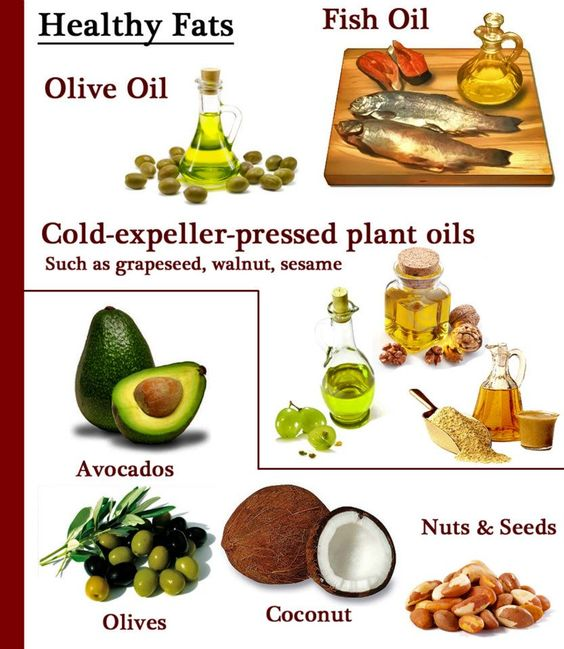
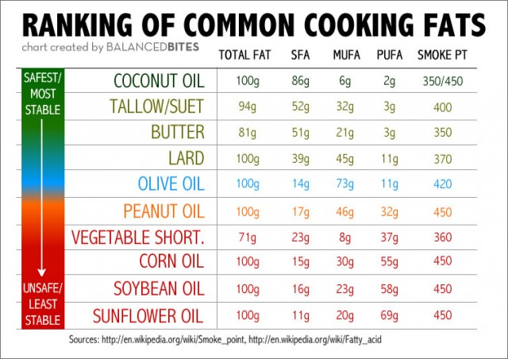

Fats provide energy, store vitamins and synthesize hormones. According to NIN, about 1/5th of your diet or 20% should be devoted to fats all three kinds -polyunsaturated, monosaturated and omega-3 fatty acids. Vegetable oil used in day to day cooking is a major source of visible fat in our diet. To ensure optimal fat quality the use of a combination of vegetable oils is important. The thumb rule - don't fear trying different oils. It is suggested to have a good blend of various types of oils in your diet. You could juggle between butter, ghee, olive oil, mustard oil, soyabean, sesame or even groundnut oil for different meals, suggests Dr. Shikha Sharma. Depend more on unrefined (Kachi Ghani) or cold pressed oils versus refined oils, goes without saying but that always seems to be a struggle.
Vitamins and Minerals: These micronutrients support metabolism, nerve and muscle function, bone maintenance and cell production. Minerals are inorganic and so minerals from plants, meat and fish easily find their way into body. Vitamins are fragile compounds and it's difficult to shuttle them as they may be destroyed during cooking or storing. They can be derived from nuts, oilseeds, fruits and green leafy vegetables. Vitamin A, E, B12and D are vital and so is calcium and iron. The National Institute of Nutrition recommends the consumption of 100 grams of greens and 100 grams of fruits each day.
In India, iron deficiency or anaemia affects about 50% of the population, more women than men. "Since women go through several hormonal changes from pregnancy to menstrual and menopause, they need to maintain a steady dose of calcium, Vitamin D, folic acid, iron and biotin," says Dr. Shikha Sharma. Another crucial aspect that Dr. Shikha throws the spotlight on is the need to drink adequate water. Lack of it can lead to acidity and water retention. Anywhere between six to eight glasses of water is needed to keep your body hydrated.
(100 grams milk and milk products)
Men: 600 mg/day
Female: 600 mg/day
Men: 17 mg/day
Female: 21mg/day
 